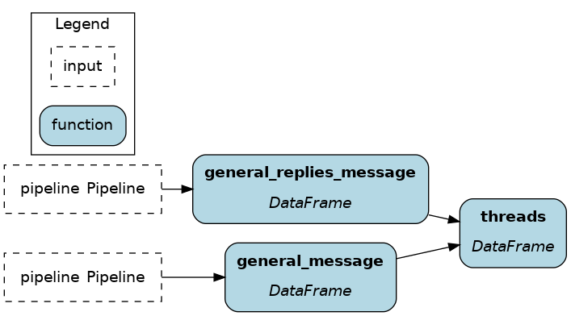
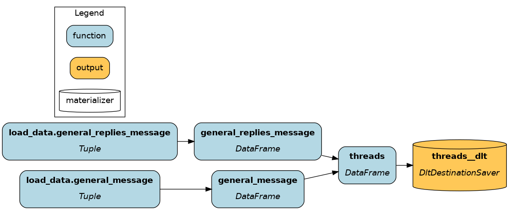

dlt¶
dlt stands for “data load tool”. It’s an open-source Python library providing a ton of data Sources (Slack, Stripe, Google Analytics, Zendesk, etc.) and Destinations (S3, Snowflake, BigQuery, Postgres, etc.). Pipelines make it easy to connect Sources and Destinations and provide advanced engineering features such as table normalization, incremental loading, and automatic schema evolution.
dlt is an “extract and load” tool and Apache Hamilton is a “transform” tool, allowing various usage patterns.
On this page, you’ll learn:
Extract, Transform, Load (ETL)
Extract, Load, Transform (ELT)
dlt materializer plugin for Apache Hamilton
Note
See this blog post for a more detailed discussion about ETL with dlt + Apache Hamilton
Extract, Transform, Load (ETL)¶
The key consideration for ETL is that the data has to move twice:
ingest raw data (dlt) -> transform (Apache Hamilton) -> store transformed data (dlt)
Extract: dlt moves the raw data to a processing server
Transform: on the server, Apache Hamilton executes transformations
Load: dlt moves the final data to its destination (database, dashboard, etc.)
Pros
Reduce storage cost: raw data isn’t stored
Data centralization: transformed data is better separated from raw and low quality data
Cons
Increased latency: data has to move twice
Reduced flexibility: to try new transformations, data needs to
Extract¶
Create a dlt pipeline for raw data ingestion (see dlt guide).
Write the dlt pipeline execution code in
run.py# run.py import dlt import slack # NOTE this is dlt code, not an official Slack library # define dlt pipeline to a local duckdb instance extract_pipeline = dlt.pipeline( pipeline_name="slack_raw", destination='duckdb', dataset_name="slack_community_backup" ) # configure dlt slack source source = slack.slack_source( selected_channels=["general"], replies=True ) # moves data from source to destination raw_load_info = extract_pipeline.run(source)
Transform¶
Define the Apache Hamilton dataflow of transformations
# transform.py import dlt import pandas as pd def _table_to_df(client, table_name: str) -> pd.DataFrame: """Load data as DataFrame using the dlt SQL client""" with client.execute_query("SELECT * FROM %s" % table_name) as t: return t.df() def general_message(pipeline: dlt.Pipeline) -> pd.DataFrame: """Load table `general_message` from dlt data""" with pipeline.sql_client() as client: return _table_to_df(client, "general_message") def general_replies_message(pipeline: dlt.Pipeline) -> pd.DataFrame: """Load table `general_replies_message` from dlt data""" with pipeline.sql_client() as client: return _table_to_df(client, "general_replies_message") def threads( general_message: pd.DataFrame, general_replies_message: pd.DataFrame, ) -> pd.DataFrame: """Reassemble from the union of parent messages and replies""" columns = ["thread_ts", "ts", "user", "text"] return pd.concat( [general_message[columns], general_replies_message[columns]], axis=0 )

Add the Apache Hamilton dataflow execution code to
run.py# run.py from hamilton import driver import transform # module containing dataflow definition # pass the `transform` module dr = driver.Builder().with_modules(transform).build() # request the node `threads`; pass the dlt `pipeline` as inputs results = dr.execute(["threads"], inputs=dict(pipeline=extract_pipeline)) # `results` is a dictionary with key `threads`
Load¶
Create a 2nd dlt pipeline to load the transformed data. The
pipeline_nameshould be different from the Extract step.# run.py # define dlt pipeline to bigquery (our prod env) load_pipeline = dlt.pipeline( pipeline_name="slack_final", destination='bigquery', dataset_name="slack_community_backup" ) # pass the results from Apache Hamilton to dlt data = results["threads"].to_dict(orient="records") final_load_info = load_pipeline.run(data, table_name="threads")
ETL Summary¶
You need to set up your dlt pipeline for raw and transformed data, and define your Apache Hamilton transformation dataflow. Then, your execution code consist of executing the ETL step in sequence. It should look like this:
# run.py
import dlt
from hamilton import driver
import slack # NOTE this is dlt code, not an official Slack library
import transform # module containing dataflow definition
# EXTRACT
extract_pipeline = dlt.pipeline(
pipeline_name="slack_raw",
destination='duckdb',
dataset_name="slack_community_backup"
)
source = slack.slack_source(
selected_channels=["general"], replies=True
)
raw_load_info = extract_pipeline.run(source)
# TRANSFORM
dr = driver.Builder().with_modules(transform).build()
results = dr.execute(["threads"], inputs=dict(pipeline=extract_pipeline))
# LOAD
load_pipeline = dlt.pipeline(
pipeline_name="slack_final",
destination='bigquery',
dataset_name="slack_community_backup"
)
data = results["threads"].to_dict(orient="records")
final_load_info = load_pipeline.run(data, table_name="threads")
Extract, Load, Transform (ELT)¶
Compared to ETL, ELT moves data once.
ingest and store raw data (dlt) -> transform (Apache Hamilton)
Transformations happen within the data destination, typically a data warehouse. To achieve this, we will leverage the Ibis library, which allows to execute data transformations directly on the destination backend.
Extract & Load: dlt moves the raw data to the destination
Transform: Apache Hamilton + Ibis execute transformations within the destination
Pros
Deduplicate computation: redundant operations can be optimized using raw and intermediary data
Simpler architecture: no transformation server is needed, unlike ETL
Cons
Increased storage cost: more space is required to store raw and intermediary data
Decreased data quality: the sprawl of data of various quality levels needs to be governed
Extract & Load¶
Create a dlt pipeline for raw data ingestion (see dlt guide).
Write the dlt pipeline execution code in
run.py# run.py import dlt import slack # NOTE this is dlt code, not an official Slack library # define dlt pipeline to duckdb pipeline = dlt.pipeline( pipeline_name="slack", destination='duckdb', dataset_name="slack_community_backup" ) # load dlt slack source source = slack.slack_source( selected_channels=["general"], replies=True ) # execute dlt pipeline load_info = pipeline.run(source)
Transform¶
Define a dataflow of transformations using Apache Hamilton + Ibis
# transform.py import ibis import ibis.expr.types as ir def db_con(pipeline: dlt.Pipeline) -> ibis.BaseBackend: backend = ibis.connect(f"{pipeline.pipeline_name}.duckdb") ibis.set_backend(backend) return backend def general_message(db_con: ibis.BaseBackend, pipeline: dlt.Pipeline) -> ir.Table: """Load table `general_message` from dlt data""" return db_con.table( "general_message", schema=pipeline.dataset_name, database=pipeline.pipeline_name ).mutate( thread_ts=ibis._.thread_ts.cast(str), ts=ibis._.ts.cast(str), ) def general_replies_message(db_con: ibis.BaseBackend, pipeline: dlt.Pipeline) -> ir.Table: """Load table `general_replies_message` from dlt data""" return db_con.table( "general_replies_message", schema=pipeline.dataset_name, database=pipeline.pipeline_name ) def threads( general_message: ir.Table, general_replies_message: ir.Table, ) -> ir.Table: """Create the union of `general_message` and `general_replies_message`""" columns = ["thread_ts", "ts", "user", "text"] return ibis.union( general_message.select(columns), general_replies_message.select(columns), ) def insert_threads(threads: ir.Table) -> bool: db_con = ibis.get_backend() # retrieves the backend set in `db_con()` db_con.create_table("threads", threads) return True
Execute the Apache Hamilton dataflow to trigger transformations on the backend
# run.py # hamilton transform from hamilton import driver import transform # module containing dataflow definition dr = driver.Builder().with_modules(transform).build() dr.execute( ["insert_threads"], # execute node `insert_threads` inputs=dict(pipeline=pipeline) # pass the dlt pipeline )
ELT Summary¶
You need to set up your dlt pipeline for raw, and define your Apache Hamilton transformation dataflow. Then, your execution code consist of using dlt to move data to the backend and Apache Hamilton + Ibis to execute transformations.
# run.py
import dlt
from hamilton import driver
import slack # NOTE this is dlt code, not an official Slack library
import transform # module containing dataflow definition
# EXTRACT & LOAD
pipeline = dlt.pipeline(
pipeline_name="slack",
destination='duckdb',
dataset_name="slack_community_backup"
)
source = slack.slack_source(
selected_channels=["general"], replies=True
)
load_info = pipeline.run(source)
# TRANSFORM
dr = driver.Builder().with_modules(transform).build()
results = dr.execute(
["insert_threads"], # query the `threads` node
inputs=dict(pipeline=pipeline) # pass the dlt load info
)
dlt materializer plugin¶
We added custom Data Loader/Saver to plug dlt with Apache Hamilton. Compared to the previous approach, it allows to include the dlt operations as part of the Apache Hamilton dataflow and improve lineage / visibility.
Note
See this notebook for a demo.
DataLoader¶
The DataLoader allows to read in-memory data from a dlt.Resource. When working with dlt.Source, you can access individual dlt.Resource with source.resource["source_name"]. This removes the need to write utility functions to read data from dlt (with pandas or Ibis). Contrary to the previous ETL and ELT examples, this approach is useful when you don’t want to store the dlt Source data. It effectively connects dlt to Apache Hamilton to enable “Extract, Transform” (ET).
# run.py
from hamilton import driver
from hamilton.io.materialization import from_
import slack # NOTE this is dlt code, not an official Slack library
import transform
source = slack.source(selected_channels=["general"], replies=True)
dr = driver.Builder().with_modules(transform).build()
materializers = [
from_.dlt(
target="general_message", # node name assigned to the data
resource=source.resources["general_message"]
),
from_.dlt(
target="general_replies_message",
resource=source.resources["general_replies_message"]
),
]
# when using only loaders (i.e., `from_`), you need to specify
# `additional_vars` to compute, like you would in `.execute(final_vars=["threads"])`
dr.materialize(*materializers, additional_vars=["threads"])
DataSaver¶
The DataSaver allows to write node results to any dlt.Destination. You’ll need to define a dlt.Pipeline with the desired dlt.Destination and you can specify arguments for the pipeline.run() behavior (e.g., incremental loading, primary key, load_file_format). This provides a “Transform, Load” (TL) connector from Apache Hamilton to dlt.
# run.py
import dlt
from hamilton import driver
from hamilton.io.materialization import to
import slack # NOTE this is dlt code, not an official Slack library
import transform
pipeline = dlt.pipeline(
pipeline_name="slack",
destination='duckdb',
dataset_name="slack_community_backup"
)
dr = driver.Builder().with_modules(transform).build()
materializers = [
to.dlt(
id="threads__dlt", # node name
dependencies=["threads"],
table_name="slack_threads",
pipeline=pipeline,
)
]
dr.materialize(*materializers)
Combining both¶
You can also combine both the DataLoader and DataSaver. You will see below that it’s almost identical to the ELT example, but now all operations are part of the Apache Hamilton dataflow!
# run.py
import dlt
from hamilton import driver
from hamilton.io.materialization import from_, to
import slack # NOTE this is dlt code, not an official Slack library
import transform
pipeline = dlt.pipeline(
pipeline_name="slack",
destination='duckdb',
dataset_name="slack_community_backup"
)
source = slack.source(selected_channels=["general"], replies=True)
dr = driver.Builder().with_modules(transform).build()
materializers = [
from_.dlt(
target="general_message",
resource=source.resources["general_message"]
),
from_.dlt(
target="general_replies_message",
resource=source.resources["general_replies_message"]
),
to.dlt(
id="threads__dlt",
dependencies=["threads"],
table_name="slack_threads",
pipeline=pipeline,
)
]
dr.materialize(*materializers)

Next steps¶
Our full code example to ingest Slack data and generate thread summaries is available on GitHub.
Another important pattern in data engineering is reverse ETL, which consists of moving data analytics back to your sources (CRM, Hubspot, Zendesk, etc.). See this dlt blog to get started.